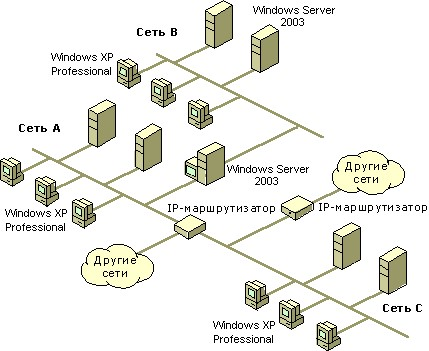

Маршрутизатор - это специальное устройство, предназначенное для передачи информации из одной сети в другую. Он принимает пакеты из одной сети и передает их в другую, при этом сети не объединяются в одну единую сеть, а остаются вполне независимыми. Маршрутизаторы оснащены системой управления, позволяющей фильтровать проходящие через него данные. Настроив соответствующим образом пакетный фильтр можно ограничивать или совсем запрещать доступ в другую сеть для определенных пользователей.
IP-Маршрутизация - процесс выбора последовательности маршрутизаторов, через которые проходит пакет по пути к узлу-назначению. Маршрутизатор должен иметь несколько IP-адресов с номерами объединяемых сетей. Для этого он должен быть оснащен несколькими сетевыми адаптерами.
В качестве маршрутизатора может работать компьютер под управлением операционной системой Windows 2003 Server или Windows XP Professional. Функции маршрутизации входят в состав этих операционных систем.
Маршрутизатор является шлюзом для каждой сети, которые он объединяет. Точнее шлюзом для локальной сети является сетевой адаптер, установленный в маршрутизаторе, и подключенный к этой сети. Например, рабочая станция локальной сети хочет подключиться к рабочей станции из другой сети. Она отправляет запрос в свою сеть с целью найти нужный IP-адрес. Если адрес не был найден в сети, то запрос отправляется в шлюз этой сети, т.е. на маршрутизатор, который в свою очередь перенаправляет запрос в другую сеть. Если во второй сети компьютер был найден, то они связываются через маршрутизатор.
Дополнительно шлюзы могут выполнять функции, связанные с обеспечением безопасности передаваемых данных, преобразование адресов, фильтрацию и т.п.
Наиболее распространенные протоколы маршрутизации, входящие в состав стека протоколов TCP/IP:
Address Resolution Protocol, ARP. Протокол разрешения адресов, сопоставляет IP-адрес с адресом физического оборудования MAC-адресом. Посмотреть соответствие адресов из ARP-таблицы можно набрав в командной строке arp и указав IP-адрес.
*Routing Information Protocol, RIP. Протокол маршрутной информации, который используется для обратной совместимости с существующими RIP-сетями.
*Open Shortest Path First, OSPF. Протокол выбора кратчайшего маршрута.
IP-Маршрутизация - процесс выбора пути для передачи пакета из одной сети в другую. Под путем (маршрутом) понимается последовательность маршрутизаторов, через которые проходит пакет по пути к узлу-назначению. IP-маршрутизатор - это специальное устройство, предназначенное для передачи пакетовиз одной сети в другую и обеспечивающее определение пути прохождения пакетов в составной сети. Маршрутизатор должен иметь несколько IP-адресов с номерами сетей, соответствующими номерам объединяемых сетей.
Маршрутизация осуществляется на узле-отправителе в момент отправки IP-пакета, а затем на IP-маршрутизаторах.
Принцип маршрутизации на узле отправителе выглядит достаточно просто. Когда требуется отправить пакет узлу с определенным IP-адресом, то узел-отправитель выделяет с помощью маски подсети из собственного IP-адреса и IP-адреса получателя номера сетей. Далее номера сетей сравниваются и если они совпадают, то пакет направляется непосредственно получателю, в противном случае - маршрутизатору, чей адрес указан в настройках протокола IP.
Выбор пути на маршрутизаторе осуществляется на основе информации, представленной в таблице маршрутизации. Таблица маршрутизации - это специальная таблица, сопоставляющая IP-адресам сетей адреса следующих маршрутизаторов, на которые следует отправлять пакеты с целью их доставки в эти сети. Обязательной записью в таблице маршрутизации является так называемый маршрут по умолчанию, содержащий информацию о том, как направлять пакеты в сети, адреса которых отсутствуют в таблице, поэтому нет необходимости описывать в таблице маршруты для всех сетей. Таблицы маршрутизации могут строиться "вручную" администратором или динамически, на основе обмена информацией, который осуществляют маршрутизаторы с помощью специальных протоколов - протоколов динамической маршрутизации.
Основным функциональным достоинством IP-адресации является полная логическая независимость IP-адресов от физических адресов. Однако чтобы средства канального уровня могли осуществить доставку данных, необходимо знание физического адреса получателя. Механизм определения по IP-адресу физического адреса узла-получателя обеспечивает протокол ARP (Address Resolution Protocol, Протокол Разрешения Адреса).
Определение физических адресов компьютеров осуществляется с помощью широковещательного запроса, в котором сообщается IP-адрес искомого компьютера (устройства). Получив такой ARP-запрос, каждый компьютер проверяет соответствие между указанным IP-адресом и своим собственным. В случае их совпадения сообщает отправителю свой физический адрес. После получения ответа инициировавший запрос компьютер заносит новые данные в специальную ARP-таблицу.
Наличие на каждом узле ARP-таблицы позволяет снизить объем широковещательной рассылки, поскольку запрос направляется в сеть только в случае, если нужное соответствие не найдено в ARP-таблице.
В ряде случаев может оказаться необходимым определить IP-адрес по MAC-адресу. Для этого используется протокол RARP (Reverse Address Resolution Protocol). Функционально RARP схож с протоколом ARP.
Протоколы динамической маршрутизации предназначены для автоматизации процесса построения маршрутных таблиц маршрутизаторов. Принцип их использования достаточно прост: маршрутизаторы с помощью устанавливаемого протоколом порядка рассылают определенную информацию из своей таблицы маршрутизации другим и корректируют свою таблицу на основе полученных от других данных.
Такой метод построения и поддержки маршрутных таблиц существенно упрощает задачу администрирования сетей, в которых могут происходить изменения (например, расширение) или в ситуациях, когда какие-либо маршрутизаторы и/или подсети выходят из строя.
Следует отметить, что использование протоколов динамической маршрутизации не отменяет возможность "ручного" внесения данных в таблицы маршрутизаторов. Внесенные таким образом записи называют статическими, а записи, полученные в результате обмена информацией между маршрутизаторами - динамическими. В любой таблице маршрутизации всегда присутствует, по крайней мере, одна статическая запись - маршрут по умолчанию.
Современные протоколы маршрутизации делятся на две группы: протоколы типа "вектор-расстояние" и протоколы типа "состояние канала".
В протоколах типа "вектор-расстояние" каждый маршрутизатор рассылает список адресов доступных ему сетей ("векторов"), с каждым из которых связано параметр "расстояния" (например, количество маршрутизаторов до этой сети, значение, основанное на производительности канала и т.п.). Основным представителем протоколов данной группы является протокол RIP (Routing Information Protocol, протокол маршрутной информации).
Протоколы типа "состояние канала" основаны на ином принципе. Маршрутизаторы обмениваются между собой топологической информацией о связях в сети: какие маршрутизаторы с какими сетями связаны. В результате каждый маршрутизатор имеет полное представление о структуре сети (причем это представление будет одинаковым для всех), на основе которого вычисляет собственную оптимальную таблицу маршрутизации. Протоколом этой группы является протокол OSPF (Open Shortest Path First, "открой кратчайший путь первым").
Протокол RIP (Routing Information Protocol, протокол маршрутной информации) является наиболее простым протоколом динамической маршрутизации. Он относится к протоколам типа "вектор-расстояние".
Под вектором протокол RIP определяет IP-адреса сетей, а расстояние измеряется в переходах ("хопах", hope) - количестве маршрутизаторов, которое должен пройти пакет, чтобы достичь указанной сети. Следует отметить, что максимальное значение расстояния для протокола RIP равно 15, значение 16 трактуется особым образом "сеть недостижима". Это определило основной недостаток протокола - он оказывается неприменимым в больших сетях, где Возможны маршруты, превышающие 15 переходов.
Протокол RIP версии 1 имеет ряд существенных для практического использования недостатков. К числу важных проблем относятся следующие:
Частично указанные проблемы решаются в версии 2 (RIP2).
Протокол OSPF (Routing (Open Shortest Path First, "открой кратчайший путь первым") является более новым протоколом динамической маршрутизации и относится к протоколам типа "состояние канала".
Функционирование протокола OSPF основано на использовании всеми маршрутизаторами единой базы данных, описывающей, как и с какими сетями связан каждый маршрутизатор. Описывая каждую связь, маршрутизаторы связывают с ней метрику - значение, характеризующее "качество" канала. Например, для сетей Ethernet со скоростью обмена 100 Мбит/с используется значение 1, а для коммутируемых соединений 56 Кбит/с - значение 1785. Это позволяет маршрутизаторам OSPF (в отличие от RIP, где все каналы равнозначны) учитывать реальную пропускную способность и выявлять эффективные маршруты. Важной особенностью протокола OSPF является то, что используется групповая, а не широковещательная рассылка.
Указанные особенности, такие как групповая рассылка вместо широковещательной, отсутствие ограничений на длину маршрута, периодический обмен только короткими сообщениями о состоянии, учет "качества" каналов связи позволяют использовать OSPF в больших сетях. Однако такое использование может породить серьезную проблему - большое количество циркулирующей в сети маршрутной информации и увеличение таблиц маршрутизации. А поскольку алгоритм поиска эффективных маршрутов является, с точки зрения объема вычислений, достаточно сложным, то в больших сетях могут потребоваться высокопроизводительные и, следовательно, дорогие маршрутизаторы. Поэтому возможность построения эффективных таблиц маршрутизации может рассматриваться и как достоинство, и как недостаток протокола OSPF.